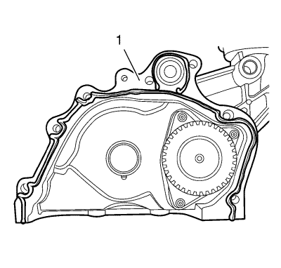

- Monte la bomba de aceite. Consultar Montaje de la bomba de aceite .

Nota: Asegúrese de que la superficie de la carcasa de la bomba de aceite no tiene aceite, grasa ni material de sellado viejo.
- Cubra con sellador la superficie de sellado de la bomba de aceite (1).
- Monte la carcasa de la bomba de aceite (1).
Precaución:Consulte Precaución con las fijaciones en la sección Prólogo.
- Monte los 7 tornillos de la carcasa de la bomba de aceite del motor (2) y apriételos a 24 N·m (18 lib. pie).
- Monte una junta de eje de accionamiento de la bomba de aceite nueva. Consultar Montaje de la junta del eje de accionamiento de la bomba de aceite .
- Monte el piñón del cigüeñal. Consultar Montaje del piñón del cigüeñal .
- Monte el enchufe del mazo de cables del sensor de presión de aceite del motor.
- Monte el tubo flexible de salida de refrigerante del refrigerador de aceite del motor. Consultar Montaje del tubo flexible de salida de refrigerante del refrigerador de aceite del motor .
- Monte el tubo flexible de entrada de refrigerante del refrigerador de aceite del motor. Consultar Montaje del tubo flexible de entrada del refrigerador de aceite del motor .
- Montar el cárter de aceite. Consultar
Sustitución del cárter de aceite : Cambio manual D33 → Cambio automático 6T45 .